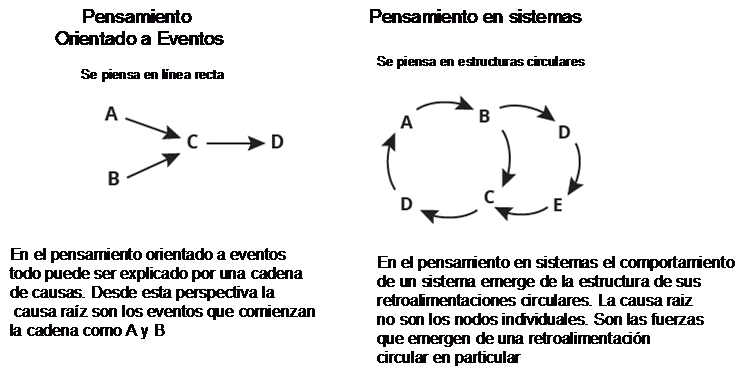

El Pensamiento en
sistemas o sistémico es una disciplina para ver "estructuras"
que subyacen bajo situaciones complejas y para discernir puntos de
alto y bajo apalancamiento.
Peter
Senge

El pensamiento
sistémico se desarrolla a partir de la década de 1950, y
cada vez tiene más influencia en la ciencia. Para ser breves
el pensamiento en sistemas es una ciencia que trata acerca de la
formulación de la lógica y la integración de
disciplinas para entender los patrones y relaciones de problemas
complejos. El pensamiento sistémico es también conocido
como principios de organización, teoría de la auto
organización.
Es una ciencia
basada en la comprensión de las conexiones y las relaciones
que existen entre cosas que aparentan estar aisladas unas de otras.
En términos técnicos, el pensamiento sistémico,
trata de entender las relaciones y patrones entre los componentes
en una red de relaciones. Las propiedades esenciales de un sistema
complejo se deriva de su relación interna (Capra, 1997). En
términos generales el pensamiento en sistemas refiere a
modelos conceptuales (mental modelling) y a la ciencia de la
lógica estructurada. Que también tiene una
aplicación práctica llamada dinámica de sistemas que
fue desarrollado en los años sesenta por Jay Forester en MIT.
La dinámica de sistemas se ocupa de la representación
matemática de nuestro modelos mentales y es un segundo paso
después de que hemos desarrollado nuestro modelo
mental.
REFERENCIAS
1
Richmond B.
1991
11
Richmond
B.
28
Richmond B.
1994.